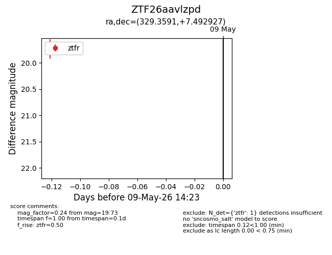
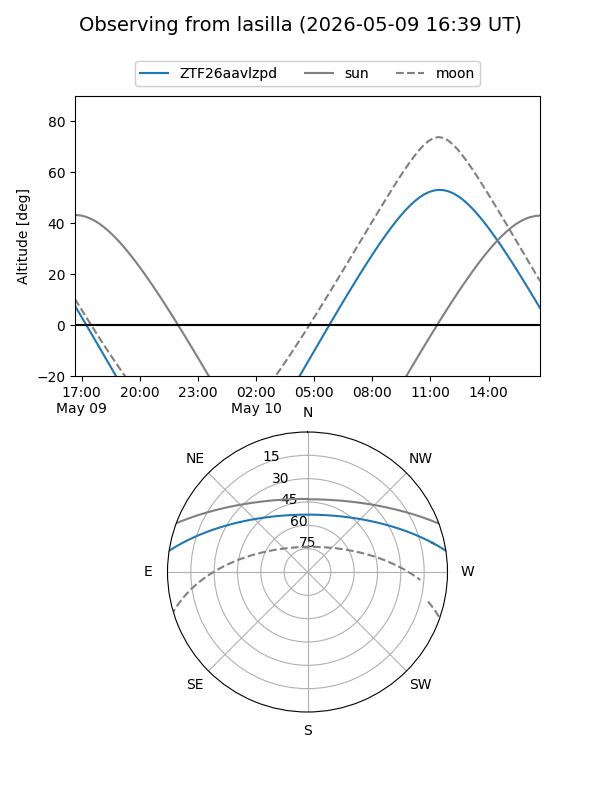
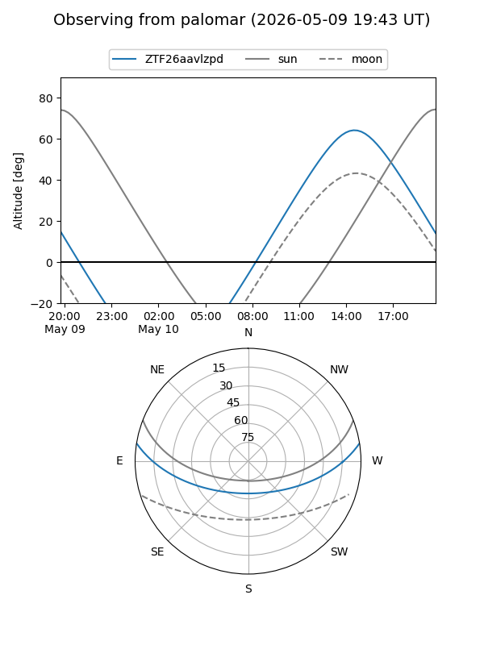

ZTF26aavlzpd
Target ZTF26aavlzpd at 2026-05-09 14:26
Aliases and brokers:
FINK: link
Lasair: link
ALeRCE: link
alt names
ZTF26aavlzpd (ztf,fink_ztf)
Coordinates:
equatorial (ra, dec) = 329.3591,+7.49293
equatorial (HMS+DMS) = 21:57:26.19,+07:29:34.54
galactic (l, b) = (65.9781,-35.49248)
Flags:
Photometry:
last ztfr=19.73
1 ztfr detections
Lightcurve

Visibility


Additional plots